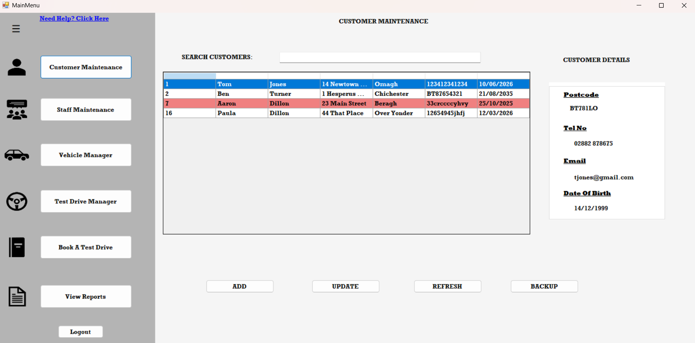
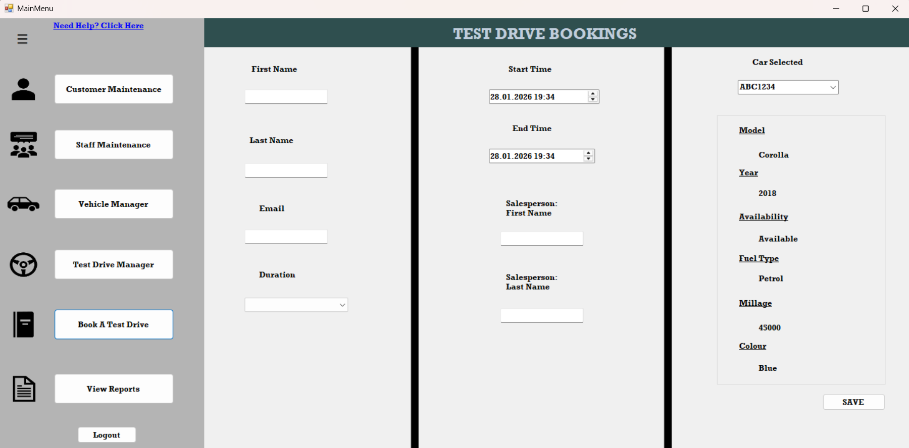

Adding and Managing Customers
The Customer Maintenance form allows you to view and manage all registered customers.
- To add a new customer, click the Add New Customer button.
- Fill in the required fields including name, address, phone number, email, date of birth, driving licence number, and expiry date.
- Select whether the customer is a returning customer (Yes/No).
- All fields are validated before saving — invalid emails, phone numbers, or postcodes will show an error.
- Once saved, the new customer appears in the Customer List immediately after pressing Refresh.
- To edit an existing customer, select them from the list and click Update Customer.
Customer Maintenance

Adding and Updating Staff Members
Staff records are managed from the Staff Maintenance form.
- Click Add Staff to create a new staff profile.
- Enter the staff member’s details, including name, position, and contact information.
- To modify details, select the staff member and click Update Staff.
- All staff are stored in the database and will appear in the Staff List automatically.
Creating a Test Drive Booking
The Test Drive Booking form allows you to schedule and manage vehicle test drives.
- Select a Customer, Staff Member (Salesperson), and Vehicle from their respective dropdown lists.
- Set the Start Date and End Date for the test drive.
- The system checks for double bookings — if the salesperson or vehicle is already booked during the same period, you’ll be notified.
- Once confirmed, click Book Test Drive to save the record.
- Bookings are automatically stored in the database and can be viewed later.
Test Drive Bookings

Managing Test Drive Bookings
The Test Drive Manager screen allows staff to view, organise, edit, and cancel existing test drive bookings. Bookings are displayed as interactive cards showing the customer, vehicle, booking date, and status.
Viewing Bookings
- When the Test Drive Manager opens, all bookings are loaded from the database.
- Each booking is displayed as a card showing key booking information.
- Information shown includes the customer name, vehicle model, booking date, and booking status.
- Bookings are displayed in pages so that the screen remains organised and easy to read.
Searching for a Booking
The Search Box allows you to quickly find a booking by entering a customer name or vehicle model.
- Type a customer's first name or last name into the search box.
- You can also search using the vehicle model.
- Click the Filter button to display matching results.
- The search system supports partial matching (for example typing "Jo" will match John or Jordan).
Filtering by Booking Status
The Status dropdown allows you to filter bookings based on their current status.
- All – shows every booking.
- Scheduled – displays upcoming bookings.
- Confirmed – displays bookings that have been confirmed.
- Cancelled – displays bookings that have been cancelled.
To apply a filter:
- Select a status from the dropdown list.
- Click the Filter button.
- The booking list will update automatically.
Sorting Bookings
The Sort dropdown allows bookings to be organised in different ways.
- Date (Ascending) – earliest bookings first.
- Date (Descending) – most recent bookings first.
- Customer (A–Z) – alphabetical by customer name.
- Customer (Z–A) – reverse alphabetical order.
- Status (A–Z) – sorted by booking status.
- Status (Z–A) – reverse status order.
When a new sort option is selected, the booking list refreshes automatically.
Navigating Booking Pages
To keep the interface organised, only a small number of bookings are shown on each page.
- Click the Next button to view the next set of bookings.
- Click the Previous button to return to the previous page.
- The Previous button will be disabled if you are already on the first page.
Editing a Booking
Bookings can be modified if details such as the date or status need to change.
- Locate the booking card.
- Click the Edit button on the card.
- The Edit Booking window will open.
- Update the booking information.
- Click Save to apply the changes.
After saving, the booking list refreshes automatically.
Cancelling a Booking
If a test drive cannot go ahead, the booking can be cancelled.
- Find the booking card you want to cancel.
- Click the Cancel button.
- The booking status will change to Cancelled.
Filtering the Customer List
The Filter text box above the customer table allows you to search for customers by name.
- Simply start typing a first or last name — the list will update automatically.
- The filter is case-insensitive, so typing “jo” will match “John”, “Joanna”, etc.
- To clear the filter, just delete the text — all customers will reappear.
Backing Up the Database
You can create a backup of the system’s database to protect customer, staff, and booking data.
- Click the Backup button in the Customer Maintenance form.
- Choose where to save the backup file. It will be saved as an .mdf database file (and a matching .ldf log file).
- The backup file name automatically includes the current date and time, for example:
Dohertys2025_Backup_20251013_143200.mdf - If the database is in use, make sure no other programs (like SQL Server Management Studio) are connected during the backup.
- After backup, the database automatically reattaches so the application can continue running normally.
Reports & Analytics
The system includes integrated Crystal Reports to generate professional, printable summaries of test drive activity and associated costs.
Test Drive Booking Report
This report provides a detailed overview of all test drive bookings. It includes customer details, booking times, and staff involvement.
- Displays all test drive bookings
- Shows customer and booking information
- Generated using Crystal Reports
How to access:
- Click the "View Reports" button
- The report loads in the report viewer
- Click the Test Drive Report button to return to the Test Drive Report
Cost Analysis Report
This report calculates the cost of a test drive based on the duration between the start and end time of the booking.
- Uses booking start and end times
- Automatically calculates duration-based cost
- Helps management analyse operational expenses
How to access:
- Open the Reporting screen
- Click the Cost Report button
- The cost report will be displayed